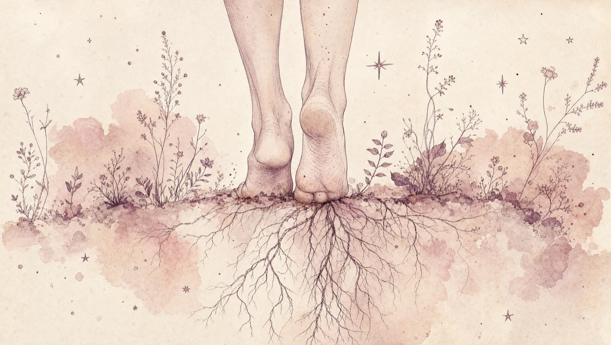
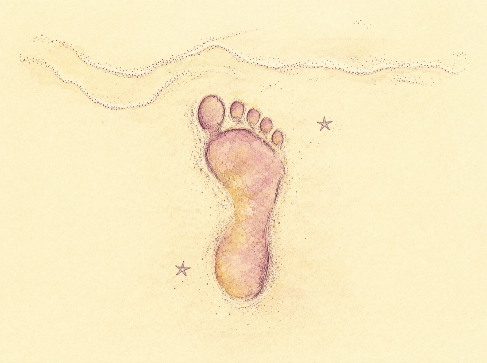

Rotchakra — «I am»

Reisen — syv dager, syv chakra
- 1Rotchakra · «I am»
- 2Harachakra · «I feel»
- 3Solar plexus-chakra · «I do»
- 4Hjertechakra · «I love»
- 5Halschakra · «I speak»
- 6Pannechakra · «I see»
- 7Kronechakra · «I understand»
Røtter og føtter
Min chakrareise på Mallorca — første dag. Rotchakra. «I am».
Pappa kjørte meg til flyplassen grytidlig lørdag morgen, ga meg femhundre kroner og spurte samtidig om jeg hadde med meg nok penger. Jeg svarte overbevisende «ja da, har tre kort». Om jeg hadde svart ærlig ville han ha reagert med vantro. Jeg moret meg med ironien, og sparte pappa for replikken jeg hadde på tungen. Mamma hadde lånt meg tusen kroner tidligere i uken da jeg oppdaget at passet mitt var gått ut på dato. Det var tre dager til lønning, og jeg måtte ordne nødpass. Den orange fargen på passet var i stil med de fargerike klærne i kofferten. Flyantrekket var beige, skinnjakken brun. Sommergarderoben min består av bikinier, topper og kjoler i alle regnbuens farger. Jeg er ikke motebevisst, men selvopptatt på min måte. Ja, og ærlig. At pappa ikke liker sannheten er hans problem. Jeg betalte ferien med kredittkort, velger å ikke bekymre meg for økonomien min.
Dagens tema er rotchakra, med tre relevante stikkord: trygghet, overlevelsesevne og realisme. Symbolsk så dreier dette energihjulet seg om starten på livet, vårt utgangspunkt. Min oppvekst var trygg og god, men også krydret med en overdose kritikk. Det har jeg gitt mamma pepper for! Jeg er både selvsikker og selvkritisk. Har følt meg kompleks, og tror det er derfor jeg har søkt meg frem til det livssynet jeg har. Jeg er opptatt av selvutvikling, sammenhengen mellom tanker og følelser, kropp og sjel.
I søskenflokken er jeg nest eldst, og omtalt som den høye og lyse. Våre personligheter er forskjellige, men vi har godt samhold. Jeg er familiekjær, trebarnsmor, 50 år, skilt (to ganger), i fast jobb, aktiv i fritiden, frisk, kreativ, intuitiv, konstruktiv, kritisk, livsnytende, takknemlig og livsglad. Jeg kan fatte meg i korthet, det er ofte hensiktsmessig. Likevel kan jeg bruke mange ord, dvele rundt selvfølgeligheter. Jeg er en filosof. Ved å skrive får jeg plassert tanker på papiret, og vurdere om jeg er enig med meg selv.
Tilbake til Mallorca. Her har jeg ikke røtter, men har feriert på øya fem ganger før, har gode minner herfra og det har blitt mange fotspor i sanden.

På forhånd takk
Flyturen var perfekt, jeg leste ferieboken min som underholdt meg fra første side. Jeg satt ved vinduet og hadde to ledige seter ved siden av meg mot midtgangen. Min oppfatning var at jeg var den eneste på det stappfulle flyet som reiste alene. Over høyttaleren sa de at to hadde sjekket inn, men som ikke skulle være med på flyet likevel. Vi ble forsinket da deres bagasje måtte fjernes fra flyet. Jeg tenkte at noe uheldig hindret de to fra å sitte på min rad, og hadde medfølelse med mine ikke-medreisende flypassasjerer. At det ikke var meningen at de skulle av gårde er like klart for meg. Sånn tenker jeg. Det var en luksus for meg å ikke sitte trangt, så jeg følte takknemlighet. Da smilte jeg og takket universet for en fin ferie!
Hotellet jeg skulle bo på har åtte etasjer. Jeg tenkte på forhånd at jeg ønsket å bo i fjerde etasje. Da jeg fikk utlevert nøkkelkort til rom 419, ja i fjerde, sendte jeg en takk til universet for at mitt ønske ble oppfylt. Tror jeg på tankens kraft? Ja, og jeg leker med den.
Fra avsky til aksept
Det var folksomt rundt bassenget på hotellet da vi ankom. Turistene som satt tett i de hvite plaststolene skrålte, sang, snakket høyt og ropte. Dunkende partymusikk ble spilt som i en russebuss. Alle solsengene var opptatt med håndklær eller bleke, fete, tatoverte hvalrosser. Det hang folk i baren og derfra sjanglet de på våte fliser med plastkrus med øl i begge hender. Atten britiske damer feiret at de hadde en kommende brud med på tur. Jeg var på et party-hotell dominert av ungdom. De hadde slått seg ned som på en leirplass rundt bassenget, som om det var bålet. Stammen holdt sammen ved å drikke øl. Jeg følte ingen lyst til å ta del i felleskapet, og ville gladelig være den enslige indianeren som listet meg vekk uten at noen engang brydde seg. Uff og æsj. Jeg følte det ubekvemt, motbydelig og galt å være omgitt av så rølpete folk. Hva gjør jeg med dette? Finner meg ikke i at mitt opphold skal belemres med en vulgær flokk som ikke tar hensyn til andre. Spre ditt lys der du er, er alltids en mulighet. Jeg har valgmuligheter, det er jeg bevisst på.
Balkongen var perfekt. Romslig nok til bord med fire stoler rundt og i tillegg danseplass! Jeg kunne fint både ligge og sitte i solen her oppe, og jeg hevet meg over lavmålet der nede. Det frydet meg å ha dette redet. Her ville jeg spise frokost, drikke kaffe, nyte vin og lese. Ingen planer om å ha noe selskap her! Hotellet lå på en liten høyde, med en lang trapp i retning stranden, med puber, barer og butikker som nærmeste naboer. Nå fikk jeg øye på en fargeklatt rundt bassenget. En spanjol i rød bukse og gul jakke. Badevakten.
Jeg skiftet til en behagelig kjole, sandaler og smatt ut. Det ble en sonderingstur i nærområdet, så videre ned på stranden og sette nye fotavtrykk i sanden. Mine armer og legger fikk smake på årets første varme solstråler. Jeg er tilstede i nuet, det minner jeg meg selv på. Min lokale dagligvarebutikk var nyåpnet og delikat, betjeningen spansk og hyggelig. Jeg fylte en liten handlekurv og sa tre spanske ord som ikke kan sies for ofte: Hola, Si og Gracias. På rusleturen la jeg merke til hvilke spisesteder som virket innbydende, og var fornøyd med at det var tre å velge mellom.
Tilbake på hotellet. Jeg reflekterte over at resepsjonistene var kledd i jordfarget uniform. De ga meg inntrykk av at de var på rett hylle. Alle tre var smilende, vennlige, samarbeidet godt, snakket flere språk og var like effektive som de var tålmodige. Det er en fin egenskap å få ting gjort uten mas. Jeg er allergisk mot stress, og setter pris på folk som beholder roen. Hotellets vertskap ville jeg mye heller slå av en prat med, enn gjestene her. Jeg hadde tillit til at de ville hjelpe meg med hva som helst.
Jeg studerte kartet over øya, lurte på hvilke veier, steder og attraksjoner det var verdt å merke seg. Jeg tenkte at jeg ville oppsøke de fineste stedene på øya, kanskje en liten landsby, en vingård eller nudiststrand. Dette ville jeg sove på, men først ut å spise sen middag. Jeg valgte å sitte ute, det var mørkt så jeg satt nær en flammesøyle inntil murveggen. Følelsen av å sitte alene på en restaurant er verdt å oppleve. Det er på en måte intimt, som om du har en date med deg selv. Jeg har lett for å la meg underholde av å observere folk rundt meg, og har gjerne en dialog med meg selv. Kan tenkes jeg mumler noen ord også, og smiler av meg selv. Dagen var fin. Jeg er bevisst og tar ansvar for min egen lykke!
Tips til rotchakra-dagen
Rotchakra dreier seg om utgangspunktet. Tenk på alt du ER. Lag en liste som starter med
«Jeg er ___»Det vil dukke opp ord hele dagen — skriv ned. Med dette i bakhodet, observer din egen adferd gjennom dagen.